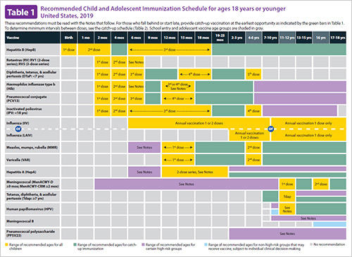
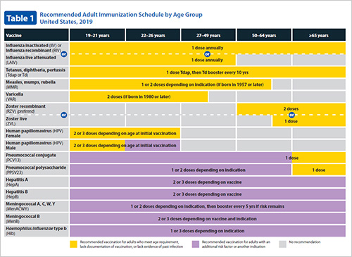

Vaccination Records at the Click of a Button
About
The goal of immunotracker is to provide an easy way to help track immunizations for health providers, patients and families. Sign Up is easy and you can sleep safe and sound knowing that your records are easily accessible.
Personal & Family
Keeping track of your immunizations can be hard to do. When immunizations are needed for employment, education, travel or health reasons, it's good to have a easy location to get all the information. You can store your vaccination information, as well as information for you children. No more searching through old files to find your last tetanus shot. Now its as easy as a click.
Health Providers
Now there is a place where you can track your patients vaccinations in order to make sure your patients are up to date . Having patients vaccinations up to date will protect the vulnerable populations your office will see. Now store all your patients vaccination records where they can be easily accessible by your staff.
Children Vaccine Schedule
Adult Vaccine Schedule
Still More